Problèmes et recos : 24 problèmes, chacun prouvé, chiffré et spécifié
Pour chaque problème : le symptôme, sa preuve (capture annotée ou mesure), sa cause dans le code, son impact, deux ou trois options avec leurs pour et contre, le choix et sa raison, la règle qui le fonde, ce qui touche à un choix déjà tranché, la spécification (fichier:ligne, avant → après) et des critères d'acceptation vérifiables. Les numéros de ligne sont ceux de la branche recos-design (7 novembre 2026).
Score = gravité (3 bloque ou trompe, 2 gêne, 1 détail) × fréquence (3 à chaque usage, 2 souvent, 1 rarement). Le tableau est trié par score.
| N° | Problème | Gravité | Fréquence | Score | Effort | Lot |
|---|---|---|---|---|---|---|
| P01 | Aucun écran ne dit « rien » : accueil vide, recherche et filtre sans résultat restent blancs | Bloque ou trompe | souvent | 6 | 2 h | L1 |
| P02 | Pendant un enregistrement, l'écran de la conversation n'a ni Arrêter ni Prendre une photo | Bloque ou trompe | souvent | 6 | 3 h | L1 |
| P03 | En sombre, l'accent reste #0064D2 : 2,1 à 3,0:1 sur fond sombre | Bloque ou trompe | souvent | 6 | 1 h | L1 |
| P06 | La notification d'enregistrement ne compte pas le temps, ne nomme pas la conversation et peut se taire sur l'écran verrouillé | Gêne | chaque usage | 6 | 3 h | L2 |
| P08 | Petits textes et repères sous le seuil de contraste en clair : heures, initiale de « Moi », aujourd'hui, piste, logos | Gêne | chaque usage | 6 | 1 h | L1 |
| P07 | Le lien perdu et les enregistrements en attente ne se voient nulle part sans ouvrir une boîte | Gêne | souvent | 4 | 2 h | L2 |
| P09 | TalkBack : 85 éléments touchables sans rôle, 7 titres non déclarés, des grisés actifs, un interrupteur muet | Gêne | souvent | 4 | 3 h | L2 |
| P04 | Police agrandie : en-têtes rognés, libellés collés, initiales coupées, bouton qui déborde | Bloque ou trompe | rarement | 3 | 4 h | L2 |
| P05 | « Tous les appels, téléphone ou app » promet plus que ce qui est gardé : votre voix seulement | Bloque ou trompe | rarement | 3 | 15 min | L1 |
| P10 | Quatre pièces sous 48 dp : Lire, la barre de position, les deux champs de recherche | Détail | chaque usage | 3 | 30 min | L1 |
| P13 | Quand : « Hier » manque, l'en-tête n'a pas de jour, les résultats de recherche pas de date | Détail | chaque usage | 3 | 1 h | L1 |
| P18 | « Moi » : « M » sur le téléphone, « GF » sur le Mac | Détail | chaque usage | 3 | 1 h | L3 |
| P23 | Six tailles de texte, sept rayons, neuf gris : un système à resserrer | Détail | chaque usage | 3 | 6 h | L4 |
| P11 | Le geste retour n'a pas d'aperçu, et cassera avec targetSdk 36 | Gêne | rarement | 2 | 2 h | L3 |
| P12 | Trois autorisations d'affilée au code scanné, et un saut silencieux vers les réglages d'Android | Gêne | rarement | 2 | 2 h | L2 |
| P14 | Boîtes, interrupteur et curseur de texte prennent la couleur d'Android, pas celle de l'app | Détail | souvent | 2 | 1 h | L2 |
| P15 | La pastille : un Arrêter touché par erreur ne se rattrape pas ; le point rouge a sa propre couleur | Gêne | rarement | 2 | 3 h | L3 |
| P16 | Réglages : ronds tous bleus, alerte dite deux fois, rangée des appels qui explique même allumée | Détail | souvent | 2 | 1 h | L2 |
| P17 | « CallRecorder » partout où Android écrit le nom, et une description d'accessibilité périmée | Détail | souvent | 2 | 30 min | L1 |
| P21 | Calendrier : la flèche « mois précédent » est la flèche Retour | Détail | souvent | 2 | 15 min | L3 |
| P19 | Supprimer : rien après coup ; le ⋯ s'appelle « Plus » | Détail | rarement | 1 | 30 min | L3 |
| P20 | Les noms des canaux de notification ne disent pas ce qu'on coupe | Détail | rarement | 1 | 15 min | L3 |
| P22 | Mise en route : l'icône saute de 61 dp à la connexion, sans indicateur | Détail | rarement | 1 | 30 min | L3 |
| P24 | Ponctuation des états : « Pas encore transcrite. » avec point, « Aucune parole reconnue » sans | Détail | rarement | 1 | 10 min | L3 |
P01. Aucun écran ne dit « rien » : accueil vide, recherche et filtre sans résultat restent blancs
- Symptôme
- Quatre états affichent une zone vide sans un mot : l'accueil sans conversation, la recherche sans résultat, le filtre d'une conversation sans réplique, un jour du calendrier sans conversation. Pendant la recherche, le pied (Enregistrer une réunion, Réglages) reste sous le champ.
- Preuve
- Banc : 4 états sur 34 ont une zone de contenu vide sans texte (accueil/vide, accueil/recherche-sans-resultat, accueil/calendrier-jour-vide, conversation/filtre-sans-resultat).
- Cause
- HomeScreen.kt:170-206 construit la liste sans cas vide ; ConversationScreen.kt:196, 215, 245 n'affichent
emptyque siallest vide, jamais sishown(le filtre) l'est ; HomeScreen.kt:207 dessine le pied quel que soitsearching. - Impact
- Tout nouvel utilisateur voit l'accueil vide à la première ouverture ; chaque recherche sans résultat (la recherche lit toutes les répliques : le cas est fréquent avec un mot rare).
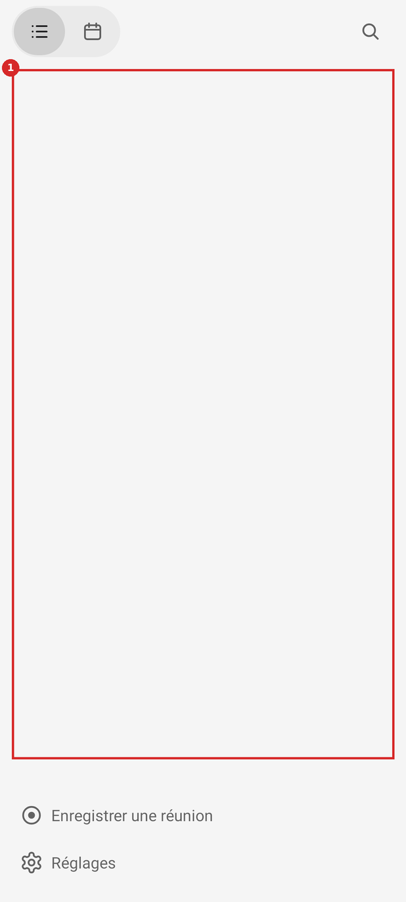
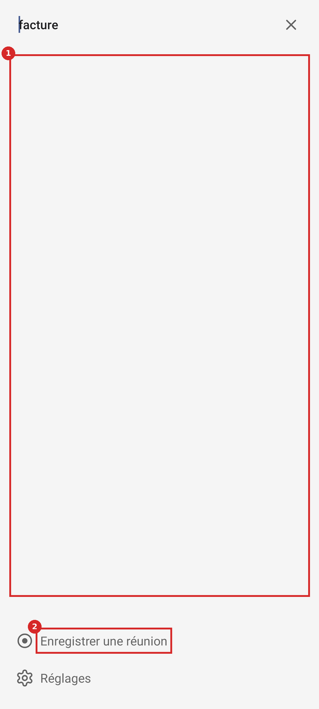
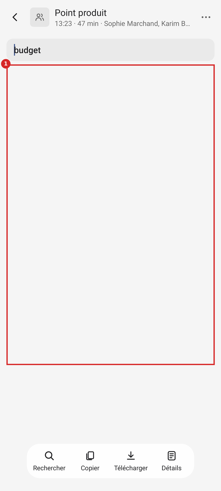
Options
A. Une ligne d'état vide dans la liste · retenue
- + Texte et forme de TEXTES.md (« Ce qui manque, puis le geste »)
- + Aucun nouvel objet
- − Une chaîne par cas
B. Illustration + texte + bouton
- + Familier (Material 2, Empty states)
- − Un bouton en plus : le pied a déjà le geste
- − Contre « zéro bouton inutile »
C. Ne rien changer, compter sur le contexte
- + Rien à faire
- − L'écran blanc ne se distingue pas d'un chargement
Choix. A : une ligne centrée, 14 sp secondaire, le titre en 16 sp. Accueil : « Aucune conversation » ; détail selon le mode (Manuel : rien ; Événements du calendrier : « Le prochain rendez-vous s'enregistrera seul » ; Tout le temps : « La journée se range dans le Journal »). Recherche : « Aucun résultat pour « facture » ». Filtre : le nombre de répliques trouvées à droite du champ, « Aucune réplique » sinon. Jour vide du calendrier : « Aucune conversation ce jour-là ». Pendant la recherche, le pied se cache.
Règle. Material Design (2) · Empty states · Material 3 · Search : barre, vue de résultats, aucun résultat · TEXTES.md du dépôt : formes « État vide », « Erreur », principe 4
Spécification (avant → après)
HomeScreen.kt:29-34
− private sealed class Row { … }+ + class Empty(val title: String, val detail: String?) : Row()
HomeScreen.kt:191
− rows = out+ if (out.none { it is Row.Talk || it is Row.Live || it is Row.Journal }) out += Row.Empty(+ if (searching) "Aucun résultat pour « ${field.text.trim()} »" else if (calendar) "Aucune conversation ce jour-là" else "Aucune conversation",+ if (searching || calendar) null else modeDetail())+ rows = out
HomeScreen.kt:207
− if (recording != drawnFoot) { drawnFoot = recording; drawFoot(recording) }+ foot.visibility = if (searching) View.GONE else View.VISIBLE+ if (recording != drawnFoot) { … }
ConversationScreen.kt:308-312 (filter)
− shown = …− adapter.notifyDataSetChanged()+ shown = …+ count.text = if (q.isEmpty()) "" else shown.size.toString()+ empty.text = if (q.isNotEmpty() && shown.isEmpty()) "Aucune réplique" else empty.text+ empty.visibility = if (shown.isEmpty()) View.VISIBLE else View.GONE
Critères d'acceptation
- Banc : l'état accueil/vide contient « Aucune conversation ».
- Banc : accueil/recherche-sans-resultat contient « Aucun résultat pour « facture » » et ne contient plus « Réglages ».
- Banc : conversation/filtre-sans-resultat contient « Aucune réplique » ; conversation/filtre affiche « 1 » à droite du champ.
- TalkBack annonce le nombre de résultats (WCAG 4.1.3) :
accessibilityLiveRegion = POLITEsur le compteur.
P02. Pendant un enregistrement, l'écran de la conversation n'a ni Arrêter ni Prendre une photo
- Symptôme
- La conversation qui s'enregistre montre le texte qui arrive et « ● En cours », mais aucun contrôle : ni barre, ni ⋯. Pour arrêter, il faut revenir à l'accueil. La pastille s'efface tant que l'app est à l'écran. Sans transcription sur le téléphone, la ligne « En cours » de l'accueil ne s'ouvre même pas, tout en ayant l'allure d'une ligne touchable.
- Preuve
- Banc : conversation/en-direct et en-direct-rien : 1 cible (Retour). accueil/enregistrement : la ligne « Réunion · ● En cours » n'est cliquable que si Speech.on ou Voices.on (HomeScreen.kt:245).
- Cause
- ConversationScreen.kt:206-207 masque ⋯ et la barre en direct ; HomeScreen.kt:245 ne donne une action à la ligne que si une transcription tourne.
- Impact
- Chaque enregistrement lancé depuis l'accueil puis ouvert : le geste le plus attendu de l'écran (arrêter) n'y est pas.
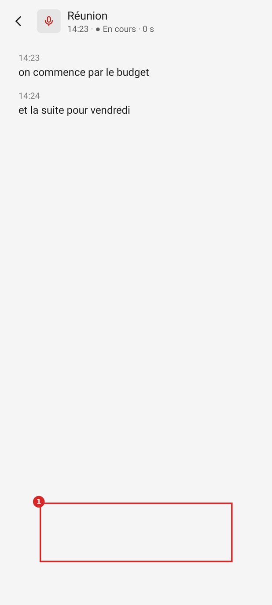
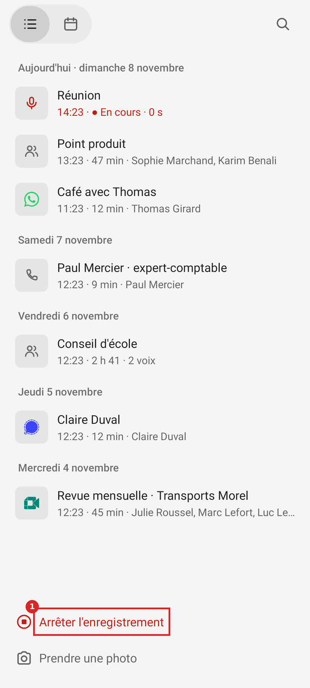
Options
A. La pastille dans l'app, en bas de l'écran en direct · retenue
- + Le contrôle déjà tranché (photo, Arrêter), même forme, même place que la barre
- + Arrêter à une main, en bas
- − Une seconde implémentation de la capsule (factoriser avec Pastille.kt)
B. Un bouton Arrêter dans l'en-tête
- + Une ligne de code
- − En haut, loin du pouce ; 48 dp d'icône seule pour l'action la plus grave
C. Revenir à l'accueil d'office
- + Rien de neuf
- − On perd le texte qu'on regardait
Choix. A. Une capsule centrée en bas (même place que la barre des conversations finies) : Prendre une photo (icône), Arrêter (rouge, « Arrêter · 12:34 » avec le temps). La ligne « En cours » de l'accueil ouvre toujours l'écran en direct ; sans transcription, il montre « Rien d'entendu pour l'instant. » et la capsule.
Règle. DESIGN.md du dépôt : Téléphone, cibles de 48 dp, capsule · WCAG 2.2 · 3.3.4 / 3.2 Prévisibilité
Choix déjà tranché. Le commentaire de ConversationScreen.kt:31 (commit 55625a5, 2026-11-06) dit « sans lecteur ni barre » pendant l'enregistrement. La proposition garde « sans lecteur » et remplace la barre de lecture par la pastille tranchée par Gildas le 2026-11-07 (Prendre une photo, Arrêter). La pastille du Mac montre le temps (« Le temps, Capturer et Arrêter », Onboarding.swift:442) : le temps dans le bouton rapproche les deux.
Spécification (avant → après)
ConversationScreen.kt:206-207
− more.visibility = View.GONE− toolbar.visibility = View.GONE+ more.visibility = View.GONE+ toolbar.visibility = View.GONE+ liveBar.visibility = View.VISIBLE // capsule : photo + « Arrêter · durée »
ConversationScreen.kt:141-152 (view)
− addView(toolbar, …BOTTOM…)+ + addView(liveBar, FrameLayout.LayoutParams(-2, -2, Gravity.BOTTOM or Gravity.CENTER_HORIZONTAL).apply { bottomMargin = dp(24) })
HomeScreen.kt:245
− action = if (Speech.on(a) || Voices.on(a)) ({ a.push(ConversationScreen(a, r.id)) }) else null+ action = { a.push(ConversationScreen(a, r.id)) }
Critères d'acceptation
- Banc : conversation/en-direct contient une vue cliquable « Arrêter l'enregistrement » de 48 dp au moins de haut, dans le tiers bas de l'écran.
- Toucher Arrêter appelle a.record() une seule fois en 1 s (même garde que HomeScreen.kt:220-225).
- Banc : accueil/enregistrement, sans Speech ni Voices : la ligne « Réunion » est cliquable et ouvre l'écran en direct.
P03. En sombre, l'accent reste #0064D2 : 2,1 à 3,0:1 sur fond sombre
- Symptôme
- « ● Écoute depuis », « Relier un calendrier » et le chiffre d'aujourd'hui sont écrits en bleu foncé sur fond sombre : ils se lisent mal. La barre de position et les ronds des modes sont presque invisibles.
- Preuve
- contrastes.csv : 3 couples texte en sombre sous 4,5:1 (2,10 ; 2,64 ; 2,98). contrastes-statiques.csv : barre de position 2,6:1 sur la carte. Avec #409CFF (déjà défini par Tone.INFO) : 5,89:1 sur le fond, 5,14:1 sur la carte.
- Cause
- LinkService.ACCENT (constante claire) employé directement 11 fois (inventaire § 6) ; seul Look.Tone.INFO (Look.kt:50) prévoit #409CFF.
- Impact
- Tout utilisateur en thème sombre (réglage système), à chaque écoute, chaque visite des Réglages en mode calendrier, chaque ouverture du calendrier.
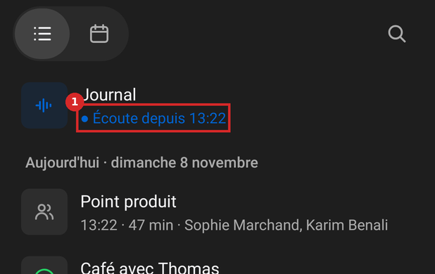
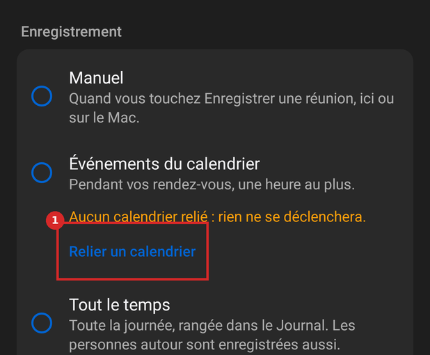
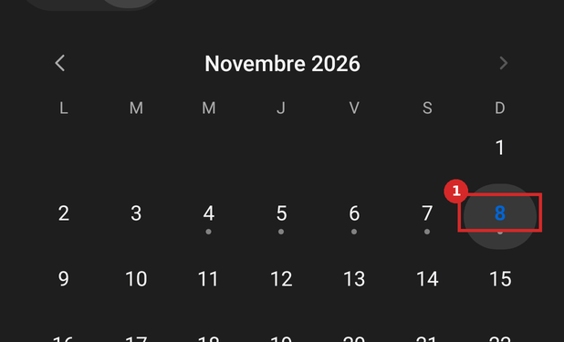
Options
A. Un accent du thème : Look.accent · retenue
- + Une valeur par rôle (DESIGN.md)
- + Corrige les 11 emplois d'un coup
- − Touche 6 fichiers
B. Corriger les 3 textes seulement
- + Moins de lignes
- − Laisse 8 emplois en double, la prochaine vue refera l'erreur
Choix. A. val accent = if (dark) 0xFF409CFF else 0xFF0064D2 dans Look ; LinkService.ACCENT reste pour les notifications, qu'Android dessine. Les fonds pleins (Lire, Scanner) gardent #0064D2 avec du blanc dessus (5,59:1), ou passent à #409CFF avec #1E1E1E dessus (5,89:1) : choisi le second en sombre, pour suivre le reste de l'écran.
Règle. WCAG 2.2 · 1.4.3 Contraste minimum (AA) · WCAG 2.2 · 1.4.11 Contraste des éléments non textuels (AA) · DESIGN.md du dépôt : Téléphone, cibles de 48 dp, capsule
Spécification (avant → après)
Look.kt:25 (après floating)
− (pas d'accent)+ val accent = if (dark) 0xFF409CFF.toInt() else LinkService.ACCENT+ val onAccent = if (dark) 0xFF1E1E1E.toInt() else 0xFFFFFFFF.toInt()
ConversationScreen.kt:81, 87, 88 ; HomeScreen.kt:242, 253, 316 ; SettingsScreen.kt:38, 62 ; SetupScreen.kt:25
− LinkService.ACCENT+ look.accent (et look.onAccent pour le texte ou l'icône posés dessus : ConversationScreen.kt:274, SetupScreen.kt:24, 31)
Look.kt:50
− INFO -> if (l.dark) 0xFF409CFF.toInt() else LinkService.ACCENT+ INFO -> l.accent
Critères d'acceptation
- mesures.py : aucun couple en sombre sous 4,5:1 dont la couleur de texte est l'accent.
- grep :
LinkService.ACCENTn'apparaît plus hors de LinkService.kt et Look.kt. - Banc sombre : accueil/ecoute, reglages/calendrier-sans-calendrier, accueil/calendrier relus à l'œil.
P04. Police agrandie : en-têtes rognés, libellés collés, initiales coupées, bouton qui déborde
- Symptôme
- À 200 % : la seconde ligne de l'en-tête d'une conversation est coupée à mi-hauteur ; « Rechercher Copier Télécharger Détails » se touchent ; « SM » devient « S » ; le libellé de « Scanner le code du Mac » sort de son bouton. À 130 %, rien n'est rogné mais 14 états coupent une ligne par des points.
- Preuve
- police.csv : à 200 %, 15 états sur 34 ont au moins un texte rogné en hauteur ou collé à son voisin (toutes les conversations, le Journal, deux états de mise en route) ; 0 à 130 %.
- Cause
- Hauteurs fixes : barre
LayoutParams(-1, dp(64))(HomeScreen.kt:102, ConversationScreen.kt:145, SettingsScreen.kt:125) ; rond des initialesLayoutParams(dp(36), dp(36))avec 13 sp (ConversationScreen.kt:320, 331) ; boutonLayoutParams(-2, dp(48))(SetupScreen.kt:51) ; outils de 76 dp de large mini, libellés enwrap_contentsans marge (ConversationScreen.kt:168-179). - Impact
- Les personnes qui agrandissent la police dans Paramètres › Affichage. Chaque écran de conversation.


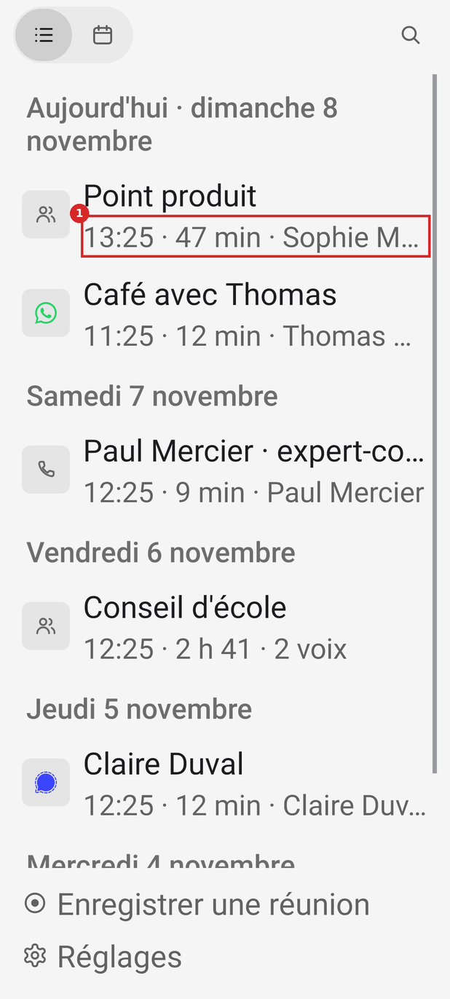
Options
A. Hauteurs minimales, libellés qui se replient · retenue
- + Tout reste lisible jusqu'à 200 %
- + Corrections locales
- − La barre grandit (jusqu'à ~90 dp à 200 %)
B. Bloquer la police (textSize en dp)
- + Rien ne bouge
- − Contraire à WCAG 1.4.4 et à Android
C. Barre du bas en icônes seules au-delà de 130 % · retenue
- + Garde la barre compacte
- + Familier (Google Photos)
- − Perd le mot sous l'icône ; le nom reste pour TalkBack et en appui long
Choix. A partout, et C pour la barre flottante quand fontScale ≥ 1,3. Initiales en dp (décoratives : le nom écrit à côté porte le sens, et le rond est déjà caché à TalkBack, ConversationScreen.kt:322).
Règle. WCAG 2.2 · 1.4.4 Redimensionnement du texte (AA) · Android 14 · police jusqu'à 200 %, échelle non linéaire · Material 3 · Top app bar : titre en titleLarge, hauteur 64 dp
Spécification (avant → après)
HomeScreen.kt:102 ; ConversationScreen.kt:145 ; SettingsScreen.kt:125
− LinearLayout.LayoutParams(-1, dp(64))+ LinearLayout.LayoutParams(-1, -2) // bar() garde minimumHeight = dp(64)
ConversationScreen.kt:320
− val mark = label("", 13f, bold = true)+ val mark = label("", 13f, bold = true).apply { setTextSize(TypedValue.COMPLEX_UNIT_DIP, 13f) }
SetupScreen.kt:51
− LinearLayout.LayoutParams(-2, dp(48))+ LinearLayout.LayoutParams(-2, -2) // minHeight = dp(48) déjà posé l. 27
ConversationScreen.kt:168-179 (tool)
− addView(label(text, 12f), …)+ if (a.resources.configuration.fontScale < 1.3f) addView(label(text, 12f), …) else tooltipText = text
Critères d'acceptation
- mesures.py à 200 % : 0 texte « rogné en hauteur », 0 « collés ».
- Banc 200 % : conversation/transcrite-avec-son, l'en-tête montre « 13:23 · 47 min » en entier ; l'initiale est « SM ».
- Banc 130 % : la barre garde ses quatre mots.
P05. « Tous les appels, téléphone ou app » promet plus que ce qui est gardé : votre voix seulement
- Symptôme
- La rangée Enregistrer les appels dit « Tous les appels, téléphone ou app. » ; par ce service, seule la voix de la personne est gardée (l'autre côté est retiré par l'annulation d'écho). En Manuel, l'interrupteur peut être allumé et ne rien faire : « Pas en Manuel. » le dit en trois mots peu clairs.
- Preuve
- Description d'accessibilité (strings.xml:3) : « La voix de la personne en face n'est pas enregistrée par ce moyen ». SPEC-telephone.md, étape « Votre voix pendant les appels » : « Votre voix seulement ».
- Cause
- SettingsScreen.kt:172.
- Impact
- Une seule lecture suffit à créer l'attente ; la déception arrive à la première relecture d'un appel, le moment où la mémoire devait servir.
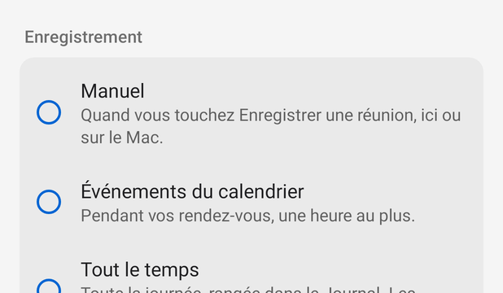
Options
A. Dire la limite dans le détail · retenue
- + Principe 4 de TEXTES.md : pas de promesse plus large que le fait
- − Une phrase un peu plus longue
B. Renommer la rangée « Enregistrer votre voix pendant les appels »
- + Le titre suffit
- − Change un label existant, plus long
Choix. A : « Votre voix, pendant les appels du téléphone et des apps. » ; en Manuel : « Éteint en Manuel. » et l'interrupteur estompé (sa valeur ne change pas).
Règle. TEXTES.md du dépôt : formes « État vide », « Erreur », principe 4
Choix déjà tranché. Le texte vient de 25ea4c4 (2026-11-07, « Enregistrer les appels : tous les appels, pas seulement WhatsApp et Signal ») : l'intention était l'étendue (toutes les apps). La proposition garde l'étendue et ajoute la limite.
Spécification (avant → après)
SettingsScreen.kt:172
− callsDetail.text = "Tous les appels, téléphone ou app." + if (mode == "manual") " Pas en Manuel." else ""+ callsDetail.text = "Votre voix, pendant les appels du téléphone et des apps." + if (mode == "manual") " Éteint en Manuel." else ""+ callsSwitch.alpha = if (mode == "manual") 0.38f else 1f
Critères d'acceptation
- Banc : reglages/manuel contient « Votre voix » et « Éteint en Manuel. ».
- scripts/retours.py ne signale pas de retour d'un texte retiré (le texte remplacé date du 2026-11-07).
P06. La notification d'enregistrement ne compte pas le temps, ne nomme pas la conversation et peut se taire sur l'écran verrouillé
- Symptôme
- Titre « Enregistre », texte « Depuis 14:02 », l'heure de début répétée dans l'en-tête par setWhen. Pas de durée. Le canal est silencieux (LOW) et la visibilité n'est pas réglée : sur un écran verrouillé qui masque le contenu, Android ne garde que l'icône et le titre ; s'il masque les notifications silencieuses, rien. L'action Arrêter porte l'icône pause du système.
- Preuve
- inventaire § 11 : 6 canaux, aucun setVisibility, aucun setCategory. Android : « VISIBILITY_PRIVATE : only basic information, such as the notification's icon and the content title, shows on the lock screen ».
- Cause
- LinkService.kt:975-984 (statusText), 1020-1050 (notification), 1045 (icône ic_media_pause).
- Impact
- À chaque enregistrement, c'est la seule trace hors de l'app quand la pastille n'est pas là (écran verrouillé, service des appels éteint).
Options
A. Titre = conversation, texte « Enregistrement », chronomètre, PUBLIC · retenue
- + Répond à « ça enregistre ? depuis quand ? » d'un regard
- + API d'Android 24+
- − Le titre (nom de réunion) devient visible verrouillé : publicVersion sans le titre
B. A + Live Update (Android 16) · retenue
- + Pastille d'état dans la barre du haut, comme un appel en cours ou un minuteur
- + Familier sur Pixel
- − Permission POST_PROMOTED_NOTIFICATIONS ; Android 16 et plus seulement
C. Garder tel quel
- + Rien à faire
- − Pas de durée, état peut-être invisible verrouillé
Choix. A puis B. Garder la barre bleue indéterminée (choix de 9dea502) : Live Update exige seulement de ne pas coloriser (setColorized false) et un titre, ce que A donne.
Règle. Android · Créer une notification : visibilité sur l'écran verrouillé · Android · Notification.Builder.setUsesChronometer · Android 16 · Live Updates (notifications mises en avant)
Choix déjà tranché. 9dea502 (2026-11-06) : « Pas de rouge : un enregistrement en cours se voit à une barre qui file sous le texte ». La barre et l'absence de rouge restent ; seuls le texte et le temps changent.
Spécification (avant → après)
LinkService.kt:982
− else -> "Enregistre" to listOfNotNull("Depuis …", test).joinToString(". ")+ else -> cur.title to listOfNotNull("Enregistrement", test).joinToString(" · ")
LinkService.kt:1031-1039
− .setShowWhen(cur != null)+ .setShowWhen(cur != null).setUsesChronometer(busy)+ .setVisibility(Notification.VISIBILITY_PUBLIC)+ .setPublicVersion(/* même chose, titre « Enregistrement » */)+ .setCategory(Notification.CATEGORY_SERVICE)
LinkService.kt:1045
− android.R.drawable.ic_media_pause+ R.drawable.ic_arreter
AndroidManifest.xml (Android 16)
+ <uses-permission android:name="android.permission.POST_PROMOTED_NOTIFICATIONS" /> et extras EXTRA_REQUEST_PROMOTED_ONGOINGCritères d'acceptation
- Test Robolectric : la notification 1 pendant un enregistrement a un titre égal au titre de la conversation, usesChronometer vrai, visibility PUBLIC.
- Sur le Pixel (Android 17) : écran verrouillé, « Enregistrement · 0:42 » visible ; pastille d'état dans la barre du haut.
P07. Le lien perdu et les enregistrements en attente ne se voient nulle part sans ouvrir une boîte
- Symptôme
- Mac injoignable et un enregistrement en attente : l'accueil est identique (voulu) ; la rangée Mac des Réglages dit « MacBook Air » comme quand tout va bien ; la ligne de la conversation en attente ne dit pas qu'elle attend, alors que le Mac écrit « pas transcrite » dans sa liste (CallCard.swift:228). Le Journal dit « Le Journal est sur MacBook Air. » pendant le chargement comme quand le Mac ne répond pas.
- Preuve
- Comparaison des JSON accueil/en-attente-du-mac et accueil/lien-perdu : 0 vue différente. Boîte Mac injoignable (dialogues.json) : « Pas joignable pour l'instant : ce que vous enregistrez reste sur ce téléphone. 2 enregistrements attendent de partir. »
- Cause
- SettingsScreen.kt:175 (valeur = nom) ; HomeScreen.kt:256-258 (meta sans état) ; ConversationScreen.kt:195.
- Impact
- Qui veut savoir si ce qu'il a enregistré est à l'abri ouvre les Réglages : la réponse n'y est pas au premier niveau.
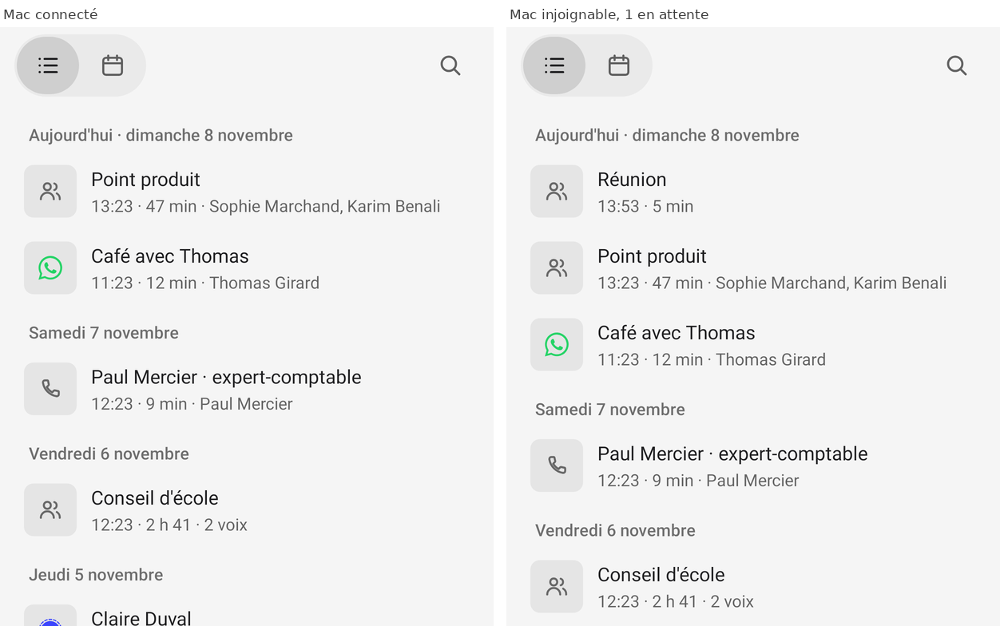
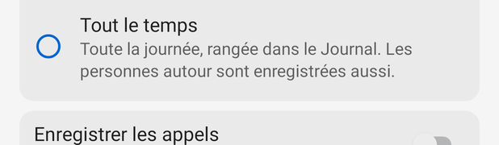
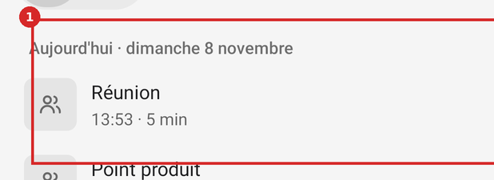
Options
A. La valeur de la rangée Mac dit l'état ; la ligne en attente le dit · retenue
- + Même mécanique que Calendrier « Non relié »
- + Pas de bandeau (principe tranché)
- − Deux textes à tenir à jour
B. Un bandeau en haut de l'accueil
- + Vu tout de suite
- − Contraire à « pas de bandeau d'état » (DESIGN.md, 55625a5)
Choix. A. Rangée Mac : « MacBook Air » si connecté, « Pas joignable » sinon, « 2 en attente » s'il reste à envoyer, en avertissement. Ligne en attente : « 13:53 · 5 min · pas encore sur le Mac » (le mot du Mac, CallCard.swift:228, en plus long). Journal : rien pendant le chargement (Conversations.journal == null et demande en cours), « MacBook Air ne répond pas : le Journal y reste. » après 10 s.
Règle. TEXTES.md du dépôt : formes « État vide », « Erreur », principe 4 · WCAG 2.2 · 4.1.3 Messages d'état (AA)
Choix déjà tranché. « Pas de bandeau d'état » (DESIGN.md, Téléphone ; 55625a5) : respecté.
Spécification (avant → après)
SettingsScreen.kt:175
− chevronRow("Mac", mac) { macDetails(mac) }+ val attente = Recordings.list(a).count { it.ended }+ val valeur = when { Link.state != Link.State.READY -> "Pas joignable"; attente > 0 -> "$attente en attente"; else -> mac }+ chevronRow("Mac", valeur, if (valeur != mac) warningColor else null) { macDetails(mac) }
HomeScreen.kt:256-258 (meta)
− listOfNotNull(hour, duration, people…)+ + "pas encore sur le Mac".takeIf { Recordings.waiting(a, i.id) }
Critères d'acceptation
- Banc : accueil/lien-perdu diffère de accueil/liste par la ligne « pas encore sur le Mac ».
- Banc : reglages, Mac injoignable, la rangée dit « Pas joignable » en couleur d'avertissement.
P08. Petits textes et repères sous le seuil de contraste en clair : heures, initiale de « Moi », aujourd'hui, piste, logos
- Symptôme
- Les heures des répliques (13 sp, gris à 50 %), l'initiale « M » de Moi (bleu sur bleu pâle), le chiffre d'aujourd'hui sur le jour choisi, la piste de la barre de position et les logos WhatsApp et Telegram sur leur plaque claire sont pâles.
- Preuve
- contrastes.csv : 3,88:1 (heures, 19 rendus), 4,30:1 (« M »), 3,93:1 (aujourd'hui). contrastes-statiques.csv : piste 1,17:1 (clair) et 1,26:1 (sombre) ; WhatsApp 1,56:1, Telegram 2,18:1 sur plaque claire ; Signal 2,23:1 sur plaque sombre ; chevron 2,53:1.
- Cause
- ConversationScreen.kt:325 (ink 0,5) ; 355 (teinte 0x1F) ; HomeScreen.kt:316 (accent sur masse 0,12) ; ConversationScreen.kt:89 (piste ink 0,12) ; Screen.kt:87-90 (une couleur de marque pour deux thèmes) ; Screen.kt:148 (chevron ink 0,4).
- Impact
- Chaque réplique de chaque conversation ; chaque ouverture du calendrier.
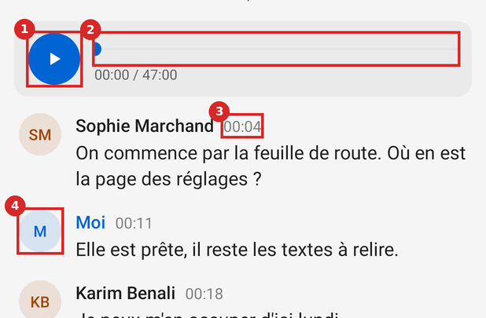
Options
A. Ramener les gris au secondaire, régler les teintes · retenue
- + Moins de valeurs (inventaire § 7)
- + Tout passe 4,5:1 ou 3:1
- − Les heures un peu plus présentes
B. Garder les gris, grossir les textes
- + Contraste « grand texte » à 3:1
- − Les heures deviennent aussi grosses que le texte
Choix. A. Heures en secondaire (0,6 : 5,59:1) et en 12 sp (rôle accessoire, bodySmall). « Moi » : teinte inchangée, texte #0057B8 en clair (5,28:1). Jour choisi : rond plein accent, chiffre blanc (5,59:1) ; aujourd'hui non choisi : chiffre accent + cercle (Material 3, date pickers). Piste à 0,50 (3,54:1 en clair, 4,44:1 en sombre, sur la carte). Logos de marque en variante foncée en clair (#128C7E WhatsApp, 3,25:1) et claire en sombre (#7A82FF Signal, 4,18:1). Chevron en secondaire.
Règle. WCAG 2.2 · 1.4.3 Contraste minimum (AA) · WCAG 2.2 · 1.4.11 Contraste des éléments non textuels (AA) · Material 3 · Date pickers : jour choisi plein, aujourd'hui cerclé · APCA in a Nutshell (Myndex)
Spécification (avant → après)
ConversationScreen.kt:325
− val at = label("", 13f, look.ink(0.5))+ val at = label("", 12f, look.secondary)
ConversationScreen.kt:347
− val color = if (l.me) Look.Tone.INFO.color(look) else …+ val color = if (l.me) look.meText else … // #0057B8 / #409CFF
ConversationScreen.kt:89
− progressBackgroundTintList = ColorStateList.valueOf(look.ink(0.12))+ progressBackgroundTintList = ColorStateList.valueOf(look.ink(0.5))
HomeScreen.kt:312-316
− background = if (selected) pressable(look.mass(24, 0.12)) …− label(n.toString(), 15f, if (today) LinkService.ACCENT else look.text)+ background = if (selected) pressable(look.mass(24, color = look.accent)) else if (today) ring(look.accent) else flat(24)+ label(n.toString(), 16f, if (selected) look.onAccent else if (today) look.accent else look.text)
Screen.kt:86-91 (kindTint)
− "whatsapp" -> 0xFF25D366+ "whatsapp" -> if (look.dark) 0xFF25D366 else 0xFF128C7E ; "telegram" -> if (look.dark) 0xFF26A5E4 else 0xFF1C7DB8 ; "signal" -> if (look.dark) 0xFF7A82FF else 0xFF3B45FD
Screen.kt:148
− look.ink(0.4)+ look.secondary
Critères d'acceptation
- mesures.py : 0 couple texte sous 4,5:1 hors boîtes d'Android, en clair et en sombre.
- contrastes-statiques.csv : piste, logos et chevron ≥ 3:1 dans les deux thèmes.
P09. TalkBack : 85 éléments touchables sans rôle, 7 titres non déclarés, des grisés actifs, un interrupteur muet
- Symptôme
- Les lignes de conversation, du pied, des Réglages, les outils de la barre, les cases du calendrier et la pastille sont des LinearLayout ou ImageView cliquables : TalkBack ne dit pas « bouton ». Les jours et les titres de groupe ne sont pas des titres. Copier et Télécharger, grisés à 40 %, restent actifs. La rangée des appels porte « Allumé/Éteint » sans rôle d'interrupteur. Le jour choisi du calendrier ne dit pas qu'il est choisi. « ● » et « · » sont lus selon la voix.
- Preuve
- accessibilite.csv : 186 occurrences (85 éléments distincts) sans rôle ; 40 occurrences (7 titres) non déclarés ; 8 grisés actifs (2 distincts) ; 1 interrupteur sans rôle.
- Cause
- Screen.kt:123-134 (footRow), 137-150 (chevronRow) ; HomeScreen.kt:240, 260-275 (talkRow), 307-320 (dayCell) ; ConversationScreen.kt:168-179 (tool), 183-184 (alpha) ; SettingsScreen.kt:88-114 ; SettingsScreen.kt:121 (heading) ; Pastille.kt:59-66.
- Impact
- Toute personne qui utilise TalkBack, sur chaque écran.
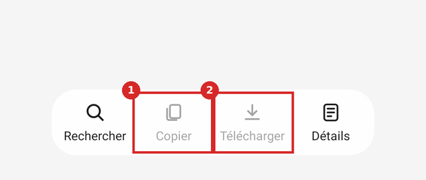
Options
A. Une fonction role(view, classe) et les états natifs · retenue
- + accessibilityClassName = Button / Switch ; isAccessibilityHeading ; isEnabled ; isSelected
- + Sans androidx
- − Touche 8 pièces
B. Remplacer les pièces par des widgets natifs (Button, Switch)
- + Rôles gratuits
- − Perd l'allure du Mac ; travail plus long
Choix. A. accessibilityDelegate commun qui pose className ; isAccessibilityHeading = true sur Row.Day et heading() ; isEnabled = false au lieu de alpha ; isSelected sur le jour choisi ; descriptions des lignes sans symboles (« Réunion, en cours depuis 14:23, 12 minutes »).
Règle. WCAG 2.2 · 4.1.2 Nom, rôle et valeur (A) · WCAG 2.2 · 1.3.1 Information et relations (A) · Android · Principes d'accessibilité : titres, états, rôles
Spécification (avant → après)
Screen.kt (nouveau)
+ fun View.role(c: Class<*>) { accessibilityDelegate = object : View.AccessibilityDelegate() { override fun onInitializeAccessibilityNodeInfo(h: View, i: AccessibilityNodeInfo) { super.onInitializeAccessibilityNodeInfo(h, i); i.className = c.name } } }
Screen.kt:123 (footRow), 137 (chevronRow) ; HomeScreen.kt:265 (talkRow), 313 (dayCell) ; ConversationScreen.kt:168 (tool) ; Pastille.kt:59
− isClickable = true+ isClickable = true; role(Button::class.java)
SettingsScreen.kt:88-95
− contentDescription = "Enregistrer les appels"+ contentDescription = "Enregistrer les appels"; role(Switch::class.java)
HomeScreen.kt:240 ; SettingsScreen.kt:121
− label(…, 14f, look.title, bold = true)+ label(…).apply { isAccessibilityHeading = true }
ConversationScreen.kt:183-184
− copyButton.alpha = if (all.isEmpty()) 0.4f else 1f+ copyButton.isEnabled = all.isNotEmpty(); copyButton.alpha = if (copyButton.isEnabled) 1f else 0.38f
HomeScreen.kt:310
− val selected = Dates.sameDay(t, picked)+ … isSelected = selected
ConversationScreen.kt:91
− contentDescription = "Position dans le son"+ + stateDescription = "${minutes(p)} sur ${minutes(d)}" à chaque showTime()
Critères d'acceptation
- mesures.py : 0 « rôle absent », 0 « titre non déclaré », 0 « grisé mais actif » dans accessibilite.csv.
- Avec TalkBack sur le Pixel : naviguer par titres passe de jour en jour ; Copier dans une conversation vide est annoncé « désactivé ».
P10. Quatre pièces sous 48 dp : Lire, la barre de position, les deux champs de recherche
- Symptôme
- Lire mesure 44 × 44 dp ; la barre de position offre 26 dp de haut ; le champ de recherche de l'accueil 42,7 dp et le filtre 41,7 dp.
- Preuve
- cibles.csv à 100 % : Lire 44,0 × 44,0 ; SeekBar 308 × 26 ; EditText 332 × 42,7 et 388 × 41,7. Toutes les autres cibles ≥ 48 dp.
- Cause
- ConversationScreen.kt:105 (dp(44)), 90 (marges 4 dp), 68 (marges 10 dp du filtre) ; HomeScreen.kt:69-82 (champ sans hauteur mini).
- Impact
- Chaque lecture d'un passage, souvent d'une main.
Options
A. 48 dp partout · retenue
- + Règle de DESIGN.md et d'Android
- − Carte du lecteur un peu plus haute (+4 dp)
Choix. A. Lire en 48 dp ; SeekBar minHeight = dp(48) ; champs minHeight = dp(48).
Règle. Android · Make apps more accessible : cibles de 48 × 48 dp · WCAG 2.2 · 2.5.8 Taille de cible minimale (AA) · DESIGN.md du dépôt : Téléphone, cibles de 48 dp, capsule
Spécification (avant → après)
ConversationScreen.kt:105
− LinearLayout.LayoutParams(dp(44), dp(44))+ LinearLayout.LayoutParams(dp(48), dp(48)) // mass(24)
ConversationScreen.kt:90
− setPadding(0, dp(4), 0, dp(4))+ minimumHeight = dp(48); setPadding(0, dp(16), 0, dp(16))
ConversationScreen.kt:68 ; HomeScreen.kt:69
− (pas de hauteur mini)+ minimumHeight = dp(48)
Critères d'acceptation
- mesures.py : 0 cible sous 48 dp à 100 %.
P11. Le geste retour n'a pas d'aperçu, et cassera avec targetSdk 36
- Symptôme
- Le retour ferme la recherche puis l'écran du dessus (juste), mais sans l'aperçu de l'écran d'en dessous que montrent les apps de Google sur un Pixel. Avec targetSdk 36, Android n'appellera plus onBackPressed : le geste fermera l'app depuis une conversation.
- Preuve
- build.gradle : targetSdk = 35 ; manifeste sans enableOnBackInvokedCallback. Android 16 : « onBackPressed is not called and KeyEvent.KEYCODE_BACK is not dispatched anymore » pour targetSdk 36.
- Cause
- MainActivity.kt:158-165.
- Impact
- Aujourd'hui : chaque retour, sans aperçu. Au passage à targetSdk 36 : chaque retour depuis un écran ouvert ferme l'app.
Options
A. OnBackInvokedCallback (API 33, sans androidx) · retenue
- + Aperçu système
- + Prêt pour 36
- − Enregistrer / retirer le rappel selon la pile
B. Rester sur onBackPressed
- + Rien à faire
- − Cassé en 36
Choix. A. Un rappel actif seulement quand la pile a plus d'un écran ou qu'une recherche est ouverte ; à l'accueil, aucun rappel : Android anime le retour à l'écran d'accueil.
Règle. Android · Retour prédictif · Android 16 · changements : onBackPressed n'est plus appelé (targetSdk 36)
Spécification (avant → après)
MainActivity.kt:158-165
− override fun onBackPressed() { … }+ private val back = OnBackInvokedCallback { if (stack.lastOrNull()?.back() != true) pop(); syncBack() }+ fun syncBack() { if (stack.size > 1 || stack.last().wantsBack) onBackInvokedDispatcher.registerOnBackInvokedCallback(PRIORITY_DEFAULT, back) else onBackInvokedDispatcher.unregisterOnBackInvokedCallback(back) }
AndroidManifest.xml:26-29
− <application …>+ <application android:enableOnBackInvokedCallback="true" …>
Critères d'acceptation
- Test : avec targetSdk 36, depuis une conversation, le retour ramène à l'accueil.
- Sur le Pixel : glisser depuis le bord montre l'accueil derrière la conversation.
P12. Trois autorisations d'affilée au code scanné, et un saut silencieux vers les réglages d'Android
- Symptôme
- Juste après le code scanné : micro, notifications, puis « appareils à proximité » (formulation d'Android 12 et plus, à relire sur le Pixel : trouver les appareils, s'y connecter, déterminer leur position relative). Le Bluetooth ne sert que sans Wi-Fi commun. Après un refus définitif, l'app ouvre les infos de l'app sans un mot.
- Preuve
- inventaire § 12 : 3 permissions dans une requête (MainActivity.kt:256-259) ; ouverture directe (MainActivity.kt:290-291).
- Cause
- MainActivity.kt:255-260, 290-291.
- Impact
- Une fois par installation, au moment où la confiance se construit ; à chaque refus définitif.
Options
A. Micro + notifications au code ; Bluetooth au premier Mac injoignable ; une boîte avant les réglages · retenue
- + « Au moment où elles servent » (Android)
- − Le Bluetooth arrive plus tard, une boîte de plus en cas d'échec Wi-Fi
B. Écran d'explication avant les trois
- + Contexte
- − Un écran de plus, du texte à lire
Choix. A. Boîte avant les réglages : titre « Le micro est refusé », message « Rien ne peut s'enregistrer sur ce téléphone. », boutons Annuler · Ouvrir les réglages.
Règle. Android · Demander des autorisations : au moment où elles servent · TEXTES.md du dépôt : formes « État vide », « Erreur », principe 4
Spécification (avant → après)
MainActivity.kt:256-257
− listOf(RECORD_AUDIO, POST_NOTIFICATIONS) + BLUETOOTH_SCAN, BLUETOOTH_ADVERTISE+ listOf(RECORD_AUDIO, POST_NOTIFICATIONS) // Bluetooth : linkTo(), branche « injoignable » (l. 223-230)
MainActivity.kt:290-291
− startActivity(Intent(Settings.ACTION_APPLICATION_DETAILS_SETTINGS, …))+ AlertDialog.Builder(this).setTitle("Le micro est refusé").setMessage("Rien ne peut s'enregistrer sur ce téléphone.").setNegativeButton("Annuler", null).setPositiveButton("Ouvrir les réglages") { _, _ -> startActivity(…) }.show()
Critères d'acceptation
- Test : linkTo() avec un Mac joignable ne demande ni BLUETOOTH_SCAN ni BLUETOOTH_ADVERTISE.
- Test : refus définitif du micro → une boîte, pas d'activité lancée.
P13. Quand : « Hier » manque, l'en-tête n'a pas de jour, les résultats de recherche pas de date
- Symptôme
- Le Mac écrit « Hier · vendredi 6 novembre », le téléphone « Vendredi 6 novembre ». Une conversation ouverte depuis le calendrier ou la recherche dit « 13:23 · 47 min » sans le jour. Un résultat de recherche montre le titre et la phrase trouvée, sans date, sans le mot en gras : six résultats « Je peux m'en occuper d'ici lundi. » se ressemblent.
- Preuve
- Screen.kt:177 vs CallsWindow.swift:255 ; banc accueil/recherche-resultats : 6 lignes, 0 date.
- Cause
- Screen.kt:175-178 ; ConversationScreen.kt:231 ; HomeScreen.kt:246.
- Impact
- Chaque recherche ; chaque ouverture d'une conversation d'un autre jour.
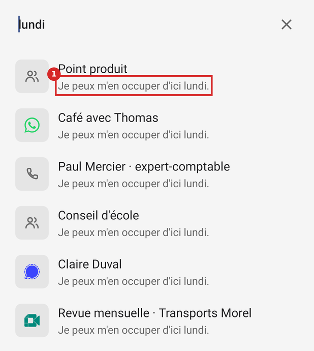
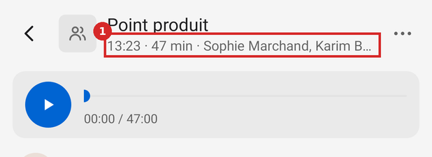
Options
A. Hier ; jour dans l'en-tête hors aujourd'hui ; date et mot en gras dans les résultats · retenue
- + Comme le Mac
- + Le mot trouvé se repère (Material 3, Search)
- − En-tête un peu plus long
Choix. A. En-tête : « jeu. 5 nov. · 14:00 · 47 min » hors aujourd'hui. Résultat : « 5 nov. · … d'ici lundi. ».
Règle. Material 3 · Search : barre, vue de résultats, aucun résultat · TEXTES.md du dépôt : formes « État vide », « Erreur », principe 4
Spécification (avant → après)
Screen.kt:177
− return if (isToday(t)) "Aujourd'hui · $text" else text.replaceFirstChar { … }+ return when { isToday(t) -> "Aujourd'hui · $text"; sameDay(t, System.currentTimeMillis() - 86_400_000L) -> "Hier · $text"; else -> text.replaceFirstChar { … } }
ConversationScreen.kt:231
− listOfNotNull(Dates.hour(i.started), …)+ listOfNotNull(Dates.shortDay(i.started).takeUnless { Dates.isToday(i.started) }, Dates.hour(i.started), …)
HomeScreen.kt:246
− r.found ?: meta(r.item)+ r.found?.let { Dates.shortDay(r.item.started) + " · " + bold(it, query) } ?: meta(r.item)
Critères d'acceptation
- Test Dates.day(hier) commence par « Hier · ».
- Banc : accueil/recherche-resultats, chaque ligne commence par une date.
P14. Boîtes, interrupteur et curseur de texte prennent la couleur d'Android, pas celle de l'app
- Symptôme
- Les boutons des boîtes (Annuler, OK, Ouvrir l'accessibilité) et l'interrupteur allumé sont dans la couleur du thème du système (#475D92 relevé par le banc ; sur un Pixel, la couleur dynamique du fond d'écran), quand tout l'écran est #0064D2. Supprimer est forcé en rouge (ConversationScreen.kt:418) à côté d'Annuler dans la couleur du système.
- Preuve
- dialogues.json : positif-couleur #FF475D92 pour 7 boutons sur 9 ; #FFC41E14 pour Supprimer.
- Cause
- AndroidManifest.xml:30 : Theme.DeviceDefault.DayNight, sans colorAccent.
- Impact
- Chaque boîte (Détails, Supprimer, Mac, appels), l'interrupteur des appels.
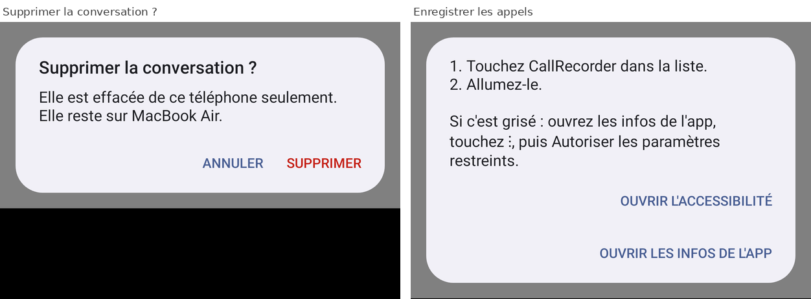
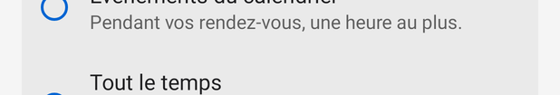
Options
A. Un thème de l'app qui pose colorAccent = accent · retenue
- + Une seule couleur d'action dans l'app
- − Un fichier res/values/themes.xml (et values-night)
B. Passer toute l'app en couleur dynamique
- + Très familier sur Pixel
- − Perd le bleu du Mac, tranché (DESIGN.md : accent #0064D2)
Choix. A. res/values/themes.xml : parent DeviceDefault.DayNight, android:colorAccent = #0064D2 (values-night : #409CFF).
Règle. Android · Couleur dynamique (Android 12) · DESIGN.md du dépôt : Téléphone, cibles de 48 dp, capsule
Choix déjà tranché. Accent #0064D2 du Mac (DESIGN.md, Téléphone).
Spécification (avant → après)
res/values/themes.xml (nouveau)
+ <style name="Callrecorder" parent="@android:style/Theme.DeviceDefault.DayNight"><item name="android:colorAccent">#0064D2</item></style>
res/values-night/themes.xml (nouveau)
+ … <item name="android:colorAccent">#409CFF</item>
AndroidManifest.xml:30
− android:theme="@android:style/Theme.DeviceDefault.DayNight"+ android:theme="@style/Callrecorder"
Critères d'acceptation
- Banc : dialogues.json, tous les boutons non destructifs en #0064D2 (clair) et #409CFF (sombre).
P15. La pastille : un Arrêter touché par erreur ne se rattrape pas ; le point rouge a sa propre couleur
- Symptôme
- La pastille se déplace avec le doigt qui touche ses boutons ; un glissé plus court que le seuil sur Arrêter arrête, et la pastille disparaît aussitôt. Rien ne permet de reprendre, sinon rouvrir l'app. Le point rouge des appels est #D32F2F en dur, à côté de Tone.LIVE.
- Preuve
- Pastille.kt:71-86 : ACTION_UP sans déplacement au-delà de scaledTouchSlop → performClick ; CallService.kt:129.
- Cause
- Pastille.kt:84 ; CallService.kt:129.
- Impact
- Rare, mais chaque fois en plein appel : la suite n'est pas enregistrée.
Options
A. Quatre secondes « Arrêté · Reprendre » après Arrêter · retenue
- + L'annulation après coup (Material 3, Snackbar)
- + Ne ralentit pas l'arrêt voulu
- − Un état de plus à la pastille
B. Appui long pour arrêter
- + Pas d'erreur possible
- − Geste caché, contraire à « toucher agit »
Choix. A. Reprendre relance un enregistrement que le Mac réunit au précédent (même mécanisme que deux enregistrements d'un même appel). Le point rouge prend Tone.LIVE.
Règle. Material 3 · Snackbar : message bref, action d'annulation
Choix déjà tranché. Contenu de la pastille tranché par Gildas le 2026-11-07 (Prendre une photo, Arrêter, icônes seules) : inchangé pendant l'enregistrement.
Spécification (avant → après)
Pastille.kt:43-46
− addView(button(…ic_photo…)); addView(button(…ic_arreter…))+ + état « arrêté » : un TextView « Arrêté » et un bouton texte « Reprendre » (48 dp), 4 s, puis retrait
CallService.kt:129
− setColor(0xFFD32F2F.toInt())+ setColor(Look.Tone.LIVE.color(Look(this)))
Critères d'acceptation
- Test : après stop(), la pastille montre « Reprendre » pendant 4 s ; le toucher relance un enregistrement de même trigger.
P16. Réglages : ronds tous bleus, alerte dite deux fois, rangée des appels qui explique même allumée
- Symptôme
- Les trois ronds des modes sont bleus, choisis ou non. « Aucun calendrier relié : rien ne se déclenchera. » et, plus bas, « Calendrier : Non relié » en orange. La rangée des appels ouvre une boîte « 1. Touchez CallRecorder… 2. Allumez-le. » même quand le service est allumé ; la boîte n'a pas de titre.
- Preuve
- SettingsScreen.kt:38 (buttonTintList d'une couleur) ; dialogues.json : boîte « appels » sans titre.
- Cause
- SettingsScreen.kt:38, 174, 96-106.
- Impact
- Chaque visite des Réglages.
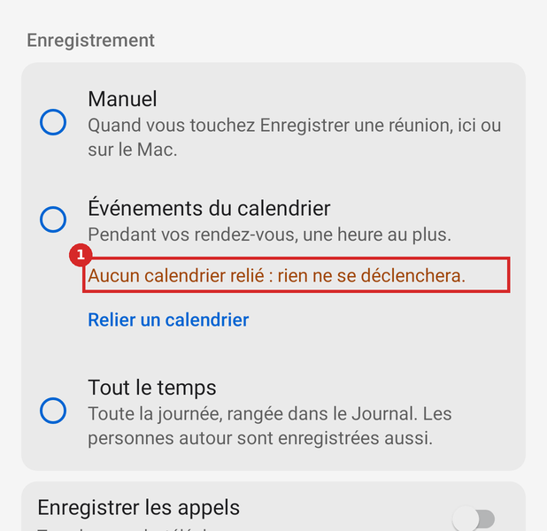
Options
A. Teinte par état, rangée Calendrier neutre, boîte selon l'état · retenue
- + Material 3, Radio button : non choisi en onSurfaceVariant
- + TEXTES.md : on ne dit pas deux fois
- − —
Choix. A. Allumé, toucher la rangée ouvre directement Réglages › Accessibilité ; éteint, la boîte prend le titre « Enregistrer les appels ».
Règle. Material 3 · Radio button : non choisi en onSurfaceVariant · TEXTES.md du dépôt : formes « État vide », « Erreur », principe 4
Choix déjà tranché. L'avertissement sous le choix vient de d2bf075 (2026-11-07) : il reste.
Spécification (avant → après)
SettingsScreen.kt:38
− buttonTintList = ColorStateList.valueOf(LinkService.ACCENT)+ buttonTintList = ColorStateList(arrayOf(intArrayOf(android.R.attr.state_checked), intArrayOf()), intArrayOf(look.accent, look.secondary))
SettingsScreen.kt:174
− chevronRow("Calendrier", calendar ?: "Non relié", if (missing) warningColor else null)+ chevronRow("Calendrier", calendar ?: "Non relié")
SettingsScreen.kt:96-106
− setOnClickListener { AlertDialog… }+ setOnClickListener { if (CallService.enabled(a)) a.startActivity(Intent(Settings.ACTION_ACCESSIBILITY_SETTINGS)) else AlertDialog….setTitle("Enregistrer les appels")… }
Critères d'acceptation
- Banc : reglages/calendrier-sans-calendrier, la valeur « Non relié » est en secondaire.
- Test : service allumé, toucher la rangée lance ACTION_ACCESSIBILITY_SETTINGS sans boîte.
P17. « CallRecorder » partout où Android écrit le nom, et une description d'accessibilité périmée
- Symptôme
- L'étiquette paraît sous l'icône, dans chaque demande d'autorisation, en tête de chaque notification et dans la liste Accessibilité ; la description, juste en dessous, écrit « Callrecorder » et parle encore du seul « petit point rouge » alors que la pastille est là depuis le 7 novembre.
- Preuve
- AndroidManifest.xml:28, 60 ; strings.xml:3 ; SettingsScreen.kt:101 (« Touchez CallRecorder dans la liste »).
- Cause
- Étiquette de la première app ; description écrite avant la pastille.
- Impact
- Chaque autorisation, chaque notification ; la page Accessibilité, la plus inquiétante de la mise en route.
Options
A. « Callrecorder » et description à jour · retenue
- + DESIGN.md, Marque
- + Principe 4 de TEXTES.md
- − Changer la boîte des appels dans le même commit
Choix. A. Description : « Pendant un appel, Callrecorder garde votre voix quand il enregistre. Une pastille, ou un point rouge sur l'écran verrouillé, le montre. La voix de la personne en face n'est pas enregistrée par ce moyen. Rien d'autre n'est lu de l'écran que le nom de l'app au premier plan. »
Règle. DESIGN.md du dépôt : Téléphone, cibles de 48 dp, capsule · TEXTES.md du dépôt : formes « État vide », « Erreur », principe 4
Choix déjà tranché. Étiquette depuis ef64907 (2026-11-01) ; description depuis e20c252 (2026-11-04), avant la pastille.
Spécification (avant → après)
AndroidManifest.xml:28
− android:label="CallRecorder"+ android:label="Callrecorder"
AndroidManifest.xml:60
− android:label="CallRecorder : enregistrer les appels"+ android:label="Callrecorder : enregistrer les appels"
SettingsScreen.kt:101
− 1. Touchez CallRecorder dans la liste.+ 1. Touchez Callrecorder dans la liste.
strings.xml:3
− … Un petit point rouge le dit, en haut de l'écran. …+ (texte ci-dessus)
Critères d'acceptation
- grep « CallRecorder » dans les textes visibles (textes.csv, visible = oui) : 0 hors noms de dossiers.
P18. « Moi » : « M » sur le téléphone, « GF » sur le Mac
- Symptôme
- Le rond de « Moi » porte « M » ; le Mac y met les initiales de la personne.
- Preuve
- ConversationScreen.kt:314, 353 ; capture Mac lecture.webp.
- Cause
- Les initiales sont tirées du nom affiché, « Moi ».
- Impact
- Chaque réplique de la personne.
Options
A. Le Mac envoie les initiales du propriétaire · retenue
- + Identique au Mac
- − Un champ de plus dans le protocole (#32)
B. Une silhouette pour « Moi »
- + Sans protocole
- − Diffère du Mac
Choix. A, B en attendant le champ.
Règle. TEXTES.md du dépôt : formes « État vide », « Erreur », principe 4
Spécification (avant → après)
ConversationScreen.kt:353
− h.mark.text = initials(l.who)+ h.mark.text = if (l.me) Link.myInitials(a) ?: "" else initials(l.who) // vide → icône silhouette
Critères d'acceptation
- Banc : conversation/longue, le rond de « Moi » ne contient pas « M » seul.
P19. Supprimer : rien après coup ; le ⋯ s'appelle « Plus »
- Symptôme
- Après Supprimer, l'écran se ferme sans un mot. Le ⋯ est annoncé « Plus » ; Android et les apps de Google disent « Plus d'options ».
- Preuve
- ConversationScreen.kt:142, 415 ; dialogues.json : menu-plus à une entrée.
- Cause
- ConversationScreen.kt:415.
- Impact
- Chaque suppression.
Options
A. Toast « Supprimée de ce téléphone » ; « Plus d'options » · retenue
- + Même forme que Copier et Télécharger (Toast)
- − —
Choix. A.
Règle. WCAG 2.2 · 4.1.3 Messages d'état (AA) · Material 3 · Snackbar : message bref, action d'annulation
Spécification (avant → après)
ConversationScreen.kt:415
− { _, _ -> Conversations.delete(a, i.id) }+ { _, _ -> Conversations.delete(a, i.id); Toast.makeText(a, "Supprimée de ce téléphone", Toast.LENGTH_SHORT).show() }
ConversationScreen.kt:142
− "Plus"+ "Plus d'options"
Critères d'acceptation
- Test : après confirmation, un Toast « Supprimée de ce téléphone ».
P20. Les noms des canaux de notification ne disent pas ce qu'on coupe
- Symptôme
- Dans Paramètres › Notifications › Callrecorder : « Enregistrement », « Prêt », « Réunions », « Écoute arrêtée », « Réunions à risque », « Enregistrement arrêté ». « Prêt » ne dit pas ce qu'on couperait.
- Preuve
- inventaire § 11.
- Cause
- LinkService.kt:78, 262, 1007, 1022, 1024.
- Impact
- Qui règle le bruit de l'app.
Options
A. Des noms de catégories, avec une description · retenue
- + Android : nom et description visibles par la personne
- − —
Choix. A. « En cours d'enregistrement », « Au repos », « Réunion qui commence », « Écoute interrompue », « Réunion qui risque de ne pas s'enregistrer », « Enregistrement arrêté seul ». Les identifiants ne changent pas.
Règle. Android · Canaux de notification : nom et description visibles
Spécification (avant → après)
LinkService.kt:1024
− NotificationChannel(CHANNEL_QUIET, "Prêt", …)+ NotificationChannel(CHANNEL_QUIET, "Au repos", …)
LinkService.kt:1022 ; 78 ; 262 ; 1007
− "Enregistrement" ; "Réunions"/"Écoute arrêtée" ; "Réunions à risque" ; "Enregistrement arrêté"+ (noms ci-dessus)
Critères d'acceptation
- Test : NotificationManager.getNotificationChannel("pret").name == "Au repos".
P21. Calendrier : la flèche « mois précédent » est la flèche Retour
- Symptôme
- « Mois précédent » prend ic_retour (celle de l'en-tête), « mois suivant » le chevron : deux dessins, deux épaisseurs, pour un couple.
- Preuve
- HomeScreen.kt:283, 285.
- Cause
- HomeScreen.kt:283.
- Impact
- Chaque changement de mois.
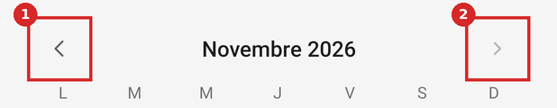
Options
A. Le chevron, retourné · retenue
- + Symétrie ; Material 3, date pickers
- − —
Choix. A.
Règle. Material 3 · Date pickers : jour choisi plein, aujourd'hui cerclé
Spécification (avant → après)
HomeScreen.kt:283
− iconButton(R.drawable.ic_retour, look.secondary, "Mois précédent", 18)+ iconButton(R.drawable.chevron, look.secondary, "Mois précédent", 18).apply { scaleX = -1f }
Critères d'acceptation
- Banc : accueil/calendrier, les deux flèches ont le même dessin.
P22. Mise en route : l'icône saute de 61 dp à la connexion, sans indicateur
- Symptôme
- « Connexion à MacBook Air… » n'a ni bouton ni indicateur : le bloc recentré remonte de 61 dp, et rien ne bouge pendant l'attente.
- Preuve
- JSON : icône à y = 346, 407, 346 dp.
- Cause
- SetupScreen.kt:70 (scan.visibility = GONE).
- Impact
- Une fois par installation.
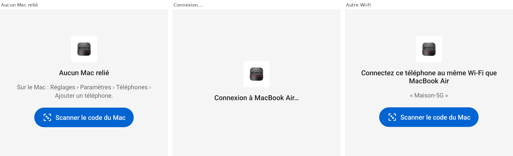
Options
A. Garder la place du bouton : indicateur circulaire à sa place · retenue
- + Pas de saut ; on voit que ça travaille (Material 3, Progress indicators)
- − —
Choix. A. ProgressBar indéterminée de 24 dp, centrée dans la hauteur du bouton (48 dp).
Règle. Material 3 · Progress indicators
Spécification (avant → après)
SetupScreen.kt:70
− scan.visibility = if (CONNECTING || !reader) View.GONE else View.VISIBLE+ scan.visibility = if (connecting) View.INVISIBLE …; spinner.visibility = if (connecting) View.VISIBLE else View.GONE
Critères d'acceptation
- Banc : l'icône a le même y dans les quatre états de la mise en route.
P23. Six tailles de texte, sept rayons, neuf gris : un système à resserrer
- Symptôme
- 12, 13, 14, 15, 16 et 17 sp, dont trois hors de l'échelle de Material 3, se côtoient à 1 sp d'écart ; 7 rayons pour 3 formes, dont la barre flottante qui n'est pas la capsule annoncée ; 9 opacités de gris entre 0,40 et 0,62 ; 26 marges hors de l'échelle 4·8·12·16·24.
- Preuve
- inventaire § 5 à 9 ; tailles-police.csv, dp.csv, opacites.csv.
- Cause
- Valeurs posées vue par vue (DESIGN.md, Écarts connus).
- Impact
- Lecture de la hiérarchie ; chaque nouvelle vue recopie une valeur voisine.
Options
A. Le système de la page Système, migré fichier par fichier · retenue
- + Une valeur par rôle (DESIGN.md)
- − Retouche visible de presque chaque écran
B. Corriger au fil des retouches
- + Sans risque
- − Les écarts durent
Choix. A, en dernier lot, après les corrections de fond.
Règle. Material 3 · échelle typographique (material-components-android, Typography.md) · Material 3 · Shape : full pour les pilules · DESIGN.md du dépôt : Téléphone, cibles de 48 dp, capsule
Choix déjà tranché. DESIGN.md, Écarts connus : « On les corrige en retouchant chaque vue ».
Spécification (avant → après)
Voir systeme.html
− table de migrationCritères d'acceptation
- inventaire : 4 tailles de texte (12, 14, 16, 22), 3 rayons (8, 12, capsule), 4 opacités de texte (1, 0,6, 0,38, titre).
P24. Ponctuation des états : « Pas encore transcrite. » avec point, « Aucune parole reconnue » sans
- Symptôme
- Dans le même rôle, quatre états finissent par un point et un non ; le Mac écrit « Pas encore transcrite » sans point.
- Preuve
- ConversationScreen.kt:195, 214, 241-243 ; StatusPage.swift:123.
- Cause
- —
- Impact
- —
Options
A. Sans point, comme le Mac et TEXTES.md (« État, badge : un mot ou deux ») · retenue
- + Constance
- − —
Choix. A.
Règle. TEXTES.md du dépôt : formes « État vide », « Erreur », principe 4
Spécification (avant → après)
ConversationScreen.kt:195, 214, 241, 243
− "Pas encore transcrit." "Rien d'entendu pour l'instant." "Pas encore arrivée sur $mac." "Pas encore transcrite."+ (mêmes textes sans point)
Critères d'acceptation
- textes.csv : aucun état d'écran vide ne finit par un point.